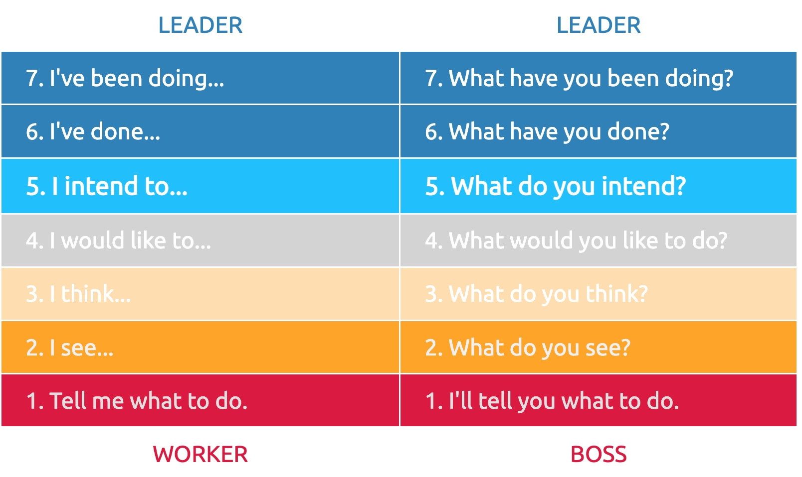

Leadership
IN THIS SECTION, YOU WILL: Understand how to apply ideas from David Marquet’s work and Netflix’s valued behaviors to develop architects’ leadership traits.
KEY POINTS:
- My view of architecture leadership is inspired by David Marquet’s work and Netflix’s valued behaviors.
- Marquet focused on leadership and organizational management, particularly emphasizing the principles of Intent-Based Leadership.
- Borrowing from Netflix’s original values, the following behavioral traits are crucial for architects: communication, judgment, impact, inclusion, selflessness, courage, integrity, curiosity, innovation, and passion.
My approach to architecture leadership draws inspiration from two sources: David Marquet’s leadership principles, as articulated in his book “Turn the Ship Around!” and Netflix’s valued behaviors. Marquet’s ideas emphasize empowering team members, providing clarity, decentralizing decision-making, striving for continuous improvement, and practicing servant leadership. Meanwhile, Netflix valued behaviors offer useful guidance for coaching and developing architects aligned with the “superglue” version.
David Marquet’s Work: The Leader-Leader Model
Marquet’s work is closely tied to the Leader-Leader model of leadership, a style where authority is shared across a team or organization instead of being concentrated at the top. In this model, every team member has something valuable to contribute and can work together toward the group’s success.
This leadership approach empowers individuals to take ownership of their work and collaborate with others to achieve common goals. Instead of relying on a single leader to make all decisions, authority, and responsibility are distributed across the team.
The leader-leader model is an excellent standard for architects’ leadership vision. Like managers in a leader-leader model, architects should act more as facilitators, coaches, and mentors than traditional top-down decision-makers. They provide team members guidance, support, or resources to help them achieve their goals and reach their full potential.
One of the key benefits of a leader-leader model is that it creates a more collaborative and inclusive work environment. It allows individuals to contribute their unique perspectives, experiences, and skills to the group, promoting a sense of ownership and accountability for the team’s success. This model also helps build trust and stronger relationships within teams, leading to increased productivity, creativity, and innovation.
David Marquet’s book “Leadership is Language” provides practical advice for leaders looking to create a more collaborative, innovative, and inclusive organizational culture. He emphasizes the importance of language and communication in leadership and introduces the phrase “I intend to” as a powerful tool for clarifying intent and empowering team members (Figure 1). When team members give intent, the psychological ownership of those actions shifts to them, making them the originators of thought and direction instead of passive followers. This shift in language helps to promote a more collaborative work environment.
I have found a phase “I intend to” to be a powerful catalyst for positioning architecture work. The phrase helps describe the work architect as someone others expect to take the initiative and lead efforts. But also to describe the desired interaction of architects with the teams they work with, where we hope teams share their intentions which architects can help improve.
 Figure 1: Leadership language. Based on Intent-Based Leadership, by David Marquet.
Netflix Valued Behaviors: Leadership Behaviors
I have found the Netflix overview of their valued behaviors to be a leading inspiration for how I coach and develop architects. The following sections summarize these behaviors, borrowing from the Netflix original values but rearranging them in the order I see as more relevant for architects.
Communication
Architects can only be successful if they are effective communicators. More specifically, as an architect, you need to have the following communication traits:
- You are concise and articulate in speech and writing
- You listen well and seek to understand before reacting
- You maintain calm poise in stressful situations to draw out the clearest thinking
- You adapt your communication style to work well with people from around the world who may not share your native language
Judgment
People frequently call architects to be objective judges when others cannot agree or need an objective second opinion. As an architect, you’ll be able to make sound judgments if:
- You are good at using data to inform your intuition
- You make wise decisions despite ambiguity
- You identify root causes, and go beyond treating symptoms
- You make decisions based on the long term, not near term
- You think strategically, and can articulate what you are, and are not, trying to do
Impact
As discussed in the Architects as Superglue, the architect’s impact should be measured as a benefit for the business. Architects need to ensure that what they are making profits the company. As an architect, you need to show the following impact traits:
- You accomplish significant amounts of important work
- You make your colleagues better
- You focus on results over process
- You demonstrate consistently strong performance so colleagues can rely upon you
Inclusion
As superglue, architects need to work with many different people and groups inclusively. You will be able to do so if:
- You collaborate effectively with people of diverse backgrounds and cultures
- You nurture and embrace differing perspectives to make better decisions
- You focus on talent and values, rather than a person’s similarity to yourself
- You are curious about how our different backgrounds affect us at work, rather than pretending they don’t affect us
Selflessness
Architects always need to consider the best interests of their organizations. This broader view is essential in group conflicts to enable resolutions that benefit the organization. To be able to operate in such way, you need to show the following selflessness traits:
- You seek what is best for your organization, rather than what is best for yourself or your group
- You share information openly and proactively
- You make time to help colleagues
- You are open-minded in search of the best ideas
Courage
Being an architect is not always a comfortable position as you will need to be a part of difficult decisions many will not be happy about. You need to have enough courage to make such difficult calls. You will be able to do so if you show the following traits:
- You say what you think when it’s in the best interest of your organization, even if it is uncomfortable
- You are willing to be critical of the status quo
- You make tough decisions without agonizing
- You take smart risks and are open to possible failure
- You question actions inconsistent with organization’s values
- You are able to be vulnerable, in search of truth
Integrity
Architects need to operate as trusted advisors. Integrity is essential for such a position of architects. To operates successfully as trusted advisor, you need to show the following traits:
- You are known for candor, authenticity, transparency, and being non-political
- You only say things about fellow employees that you say to their face
- You admit mistakes freely and openly
- You treat people with respect independent of their status or disagreement with you
Curiosity
As architects, we must proactively identify relevant new technology developments. Based on our understanding of these developments, we must create pragmatic technology recommendations for concrete platforms across the organization. That means that as architect, you need to stay curious:
- You learn rapidly and eagerly
- You make connections that others miss
- You seek alternate perspectives
- You contribute effectively outside of your specialty
Innovation
More than curiosity is required. To make an impact as an architect, you need to create useful innovations:
- You create new ideas that prove useful
- You keep your organization nimble by minimizing complexity and finding time to simplify
- You re-conceptualize issues to discover solutions to hard problems
- You challenge prevailing assumptions, and suggest better approaches
- You thrive on change
Passion
Architects are frequently role models for others. As such you need to show the following traits:
- You inspire others with your thirst for excellence
- You care intensely about your customers and organization’s success
- You are tenacious and optimistic
- You are quietly confident and openly humble
Questions to Consider
- Reflect on the Leader-Leader model of leadership in your work. How can you empower your team members and encourage them to take ownership of their work?
- Have you acted as a facilitator, coach, or mentor as an architect? Can you share an example of when you gave team members guidance, support, or resources to achieve their goals?
- How does the phrase “I intend to” resonate with your approach to architecture work? How can it change your perspective on taking the initiative and leading efforts?
- How effective do you believe your communication skills are?
- How can you foster an inclusive working environment as an architect? How do you nurture and embrace differing perspectives to make better decisions?
- Reflect on a situation where you made a decision that was best for the organization rather than what was best for yourself or your group. What was the outcome?
- Have you ever had to take an uncomfortable stance but in your organization’s best interest?
- How do you maintain integrity as a trusted advisor in your organization? Can you share an example where your honesty, authenticity, and transparency were vital?
- How have you maintained your curiosity in your role as an architect? Can you share an instance where your learning eagerness led to a significant outcome?
- What innovative solutions have you created as an architect? How have these innovations benefitted your organization?
- How do you inspire others with your passion for excellence? Can you share an instance where your optimism and tenacity led to a successful outcome?
Being Architect ← Impact |
Being Architect Architects' Career Paths: Raising the Bar → |